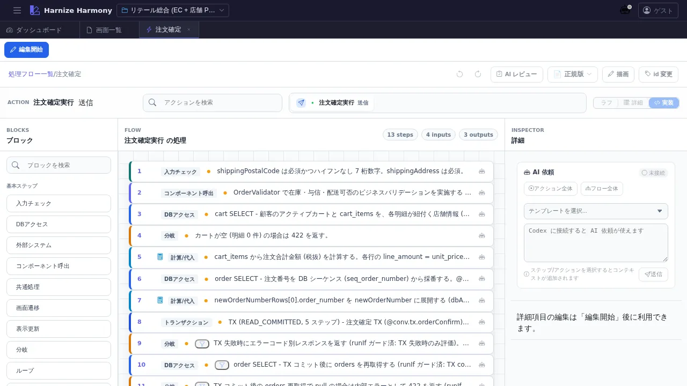

処理フロー編集
対象画面:
ProcessFlowEditor(frontend/src/components/process-flow/ProcessFlowEditor.tsx) ルート:/w/:wsId/process-flow/edit/:processFlowId種別: マルチインスタンスタブ (リソース ID 毎)
概要
Harmony の 一次成果物 である処理フロー (ProcessFlow JSON) を、Step / SubStep / Action / Trigger を組み合わせて編集する画面。本プロジェクトは「AI 読み取りが主、JSON Schema が一次」(feedback_schema_first.md) の方針で、UI は JSON 表現を可視化・編集する役割。/create-flow / /review-flow skill とセットで使う。
到達経路
- 処理フロー一覧 (
/process-flow/list) → 行をクリック / 「編集」アクション - ダッシュボード「処理フロー成熟度」パネル → 個別の flow をクリック
- 直接 URL:
/w/<wsId>/process-flow/edit/<flowId>
画面構成

Step 詳細展開 / Warnings panel 開状態の追加 screenshot は follow-up で
/document-ui process-flow-editorを再実行すると02-step-expanded.png/03-warnings-open.pngとして生成される (本 PR では default のみ収録、UX 確認用途には十分)。
主要エリア
- TableSubToolbar — 上端の補助ツールバー (workspace 切替・ヘルプ等)
- EditModeToolbar — 編集モード切替 (閲覧 / 編集 / コンテキスト) と save / reset
- EditorHeader — タイトル / id 表示 / id 変更ボタン / Codex 連携 / AI コンテキストチップ
- メインキャンバス — Step (
StepCard) を縦に並べた flow 本体- 各 Step は Action (
add/update/compute/screenTransition/httpRoute/ai等) と Trigger (onClick/onChange等) を内包 - SubStep (loop / branch / try 内の sub flow) を展開できる
- D&D による Step 順序入れ替え (
@dnd-kit)
- 各 Step は Action (
- PaletteButtons — Step 種別パレット (画面上部または右側、
ToolbarStepButton) - WarningsPanel — 検証結果一覧 (右側折りたたみ式)
- AddActionModal — 「Action 追加」モーダル (Step 内で Action を新規作成)
- DrawingOverlay — Step に紐付くマーカー / 注釈の描画レイヤ (
/designer-workskill 連携) - ScreenItemPickerModal — 画面項目を式言語で参照する際の picker
主要操作
| 操作 | 手段 | 結果 |
|---|---|---|
| Step 追加 | 上部パレットの種別ボタンをクリック or Step 間の StepInsertZone をクリック | STEP_TEMPLATES のテンプレで Step が挿入される |
| Step 削除 | Step 右クリック → 「削除」 or Delete キー | clearJumpReferences で参照を解除して削除 |
| Step 並び替え | Step ヘッダをドラッグ | @dnd-kit で並び順変更、保存後に永続化 |
| Step 複製 | 右クリック → 「複製」or Ctrl+D | LocalId を採番して clone |
| Action 追加 | Step 内「+」ボタン → AddActionModal | trigger / type / outputName 等を入力 |
| SubStep 追加 | loop / branch / try 系 Step 内「+」 | 内側 Step を追加 |
| id 変更 (rename refactor) | EditorHeader の「id 変更」 | RenameEntityDialog で kebab-case 新 id を入力、全 ref 自動更新 |
| 編集破棄 | EditModeToolbar の「破棄」 | 確認後サーバ状態に戻す |
| 保存 | Ctrl+S or 「保存」 | edit-session 経由でサーバへ commit |
| AI 部分生成 | EditorHeader の AI ボタン (Codex 連携) | requestProcessFlowPartial で Codex に部分生成を依頼 |
| 検証結果を開く | 右側 WarningsPanel ヘッダクリック | エラー / 警告一覧、Step / Action にジャンプ可 |
| マーカー追加 | Step 上で右クリック → マーカー追加 | /designer-work で Claude Code が処理する指示を残す |
データ前提
- 空フロー: Step が 0 件の場合
EmptyFlowDropZoneが中央に表示され、ここに Step テンプレをドラッグ or パレットから追加 - 典型フロー: retail サンプルの
process-flows/order-checkout.json等は 15-25 Step、add/update/compute/screenTransition/httpRouteを含む実用ボリューム - 検証エラーがある状態: WarningsPanel に件数表示、Step に warning / error バッジ表示
- draft 中状態: edit-session 経由の作業コピーが
data/.drafts/<wsId>/process-flow/<id>.jsonに保持される
関連仕様書
docs/spec/process-flow-workflow.md— 処理フロー設計の業務フローdocs/spec/process-flow-variables.md— 変数ライフサイクルdocs/spec/process-flow-transaction.md— TX 境界docs/spec/process-flow-expression-language.md— 式言語docs/spec/process-flow-extensions.md— Step / Action 拡張docs/spec/process-flow-criterion.md— runIf / criteriondocs/spec/process-flow-runtime-conventions.md— runtime 契約docs/spec/edit-session-draft.md— 明示保存式 + サーバ側 draft 管理
関連 skill
/create-flow <flowId> <業務概要>— 処理フロー JSON を AI に新規作成させる (本画面で開いて編集 → 確定)/review-flow <flowId>— 変数ライフサイクル / TX / runIf / 補償 / event 双方向の 10 観点を専門レビュー/designer-work— Step マーカー (指示 / 質問 / TODO) を Claude Code に処理させる/generate-code <flowId>— 処理フロー → backend code 生成 (techStack に基づき Spring Boot / NestJS 系を選択)/generate-tests <flowId>— 処理フロー → backend e2e test 生成 (jest+supertest)
既知の制約・注意
- 一次成果物は JSON Schema (
schemas/v3/process-flow.v3.schema.json)。UI は JSON 表現を編集する派生物に過ぎないため、UI で表現できる範囲は schema 制約に従う - Schema 拡張は
docs/spec/schema-governance.mdに従い設計者承認必須。UI に「足りない field」を見つけても AI が勝手に schema を変更してはならない - ProcessFlow の
ProcessFlowリネームが進行中 (2026-04-25 決定)。当面表記が混在する可能性あり - AI 部分生成 (Codex 連携) を使うには
.codex/config.tomlの設定 +/codex:setupが必要 - 大規模フロー (Step 50+) での D&D は performance に注意。
processFlowMutationの immutable update で最適化済 (PR #1394)